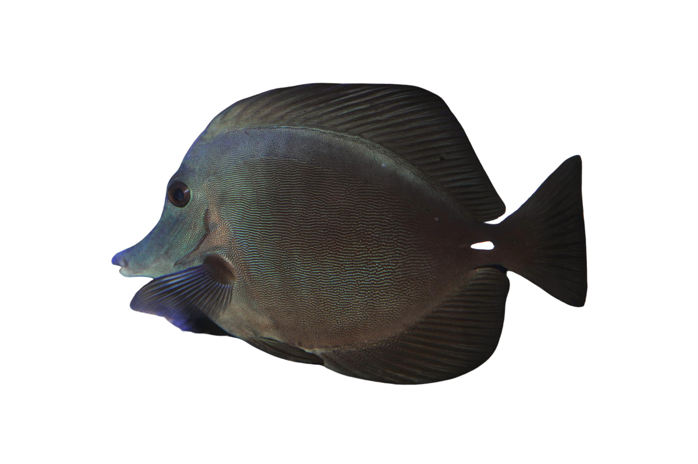

Black Tang Fish

Common Name: Sea Cucumber
Scientific Name: Holothuroidea
Adult Size: 1in - 6ft
Habitat: Found worldwide in sand, mud, rocks, and coral
Behavior: Feeds by sifting sediment of filtering passing food and nocturnal foraging
Lifespan: 5 - 10 years
Diet: plankton, algae, bacteria
Reproduction: Can produce sexually through broadcast spawning and asexually through fission
Cool Facts: Defends itself by expelling its internal organs which it grows back later
Other Names: Sea pickles or sea slugs